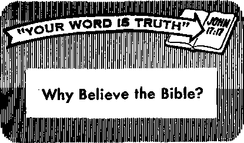

Popular Customs—Do They Please God?
PAGE 3
Wealth of Color from a Bulb
Noise Pollution and Your Hearing
Journey into Sight
MAY 8. 1969
THE REASON FOR THIS MAGAZINE
News sources that are able to keep you awake to the vital issues of our times must be unfettered by censorship and selfish interests. "Awake!” has no fetters. It recognizes facts, faces facts, Is free to publish facts. It is not bound by political ties; it is unhampered by traditional creeds. This magazine keeps itself free, that it may speak freely to you. But it does not abuse its freedom. It maintains integrity to truth.
The viewpoint of "Awakel" is not narrow, but is international. "Awakel" has its own correspondents in scores of nations. Its articles are read in many lands, in many languages, by millions of persons.
In every issue "Awake!" presents vital topics on which you should be informed. It features penetrating articles on social conditions and offers sound counsel for meeting the problems of everyday life. Current news from every continent passes in quick review. Attention is focused on activities in the fields of government and commerce about which you should know. Straightforward discussions of religious issues alert you to matters of vital concern. Customs and people in many lands, the marvels of creation, practical sciences and points of human interest are all embraced in its coverage. "Awakel” provides wholesome, instructive reading for every member of the family.
"Awake!" pledges itself to righteous principles, to exposing hidden foes and subtle dangers, to championing freedom for all, to comforting mourners and strengthening those disheartened by the failures of a delinquent world, reflecting sure hope for the establishment of God's righteous new order in this generation.
Get acquainted with "Awake!" Keep awake by reading "Awake!"
Published Simultaneously in this United States by the WATCHTOWER BIBLE AND TRACT SOCIETY OF NEW YORK. INC. 117 Adams Street Brooklyn, N.Y. 11201, U.S.A.
and in England by WATCH TOWER BIBLE AND TRACT SOCIETY
Watch Tower House, The Ridgeway London N.W. 7, England N. H, Knorr, President Grant Suiter, Secretary
Average printing each issue: 5,600,000 5d a copy (Autrtlia, 5«; Soitk Africa,
Yearly subscription rates
OTMu for semimonthly editions
America, U.S,, 117 Adams Street, Brooklyn, N.Y. 11201 $1
Aartralia, 11 Beresford Rd ., Strathlteld, N S W. 213n
Canada, 150 Brldgrl&nd Ave., Toronto 19, Ont
England, Watrh Tower House,
N<w Zealand, 021 Naw North Rd., Auckland 3
Sorth Africa, Private Bag 2, P.O Elandsfontetn, Tvl. 70c
(Monthly edltltas wit half the ab»« rates J
ItoMlttapm for subscriptions should, be sent to the office tn your country. Otherwise send your remittance to Brooklyn. Notice of expiration is sent at least two issues before subscription expires.
Now published in 26 languages
Sen I Monthly—Afrikaans, Cebuano, Danish, Dutch, English, Finnish, French, German, Greek. Uoko, Italian, Japanese, Korean, Norwegian, Portuguese, Spanish, Swedish, Tagalog, Zulu.
Monthly—Chinese, Clnyanja, Hiligaynon, Malayalam, Polish, Tamil, Ukrainian.
CHANGES OF ADDRESS should roach « thirty day* before yo«r moYlni date. Give n your old and new address (If possible, your old address label)- Write Watch Tower, Watch Tower Hom sc, The Ridgeway, London tt,W. 7, Eniland.
Entered &A aecond-clas^ matter at Brooklyn, N.Y, Printed In England
Tbs Bible trtttslatlee rogalarfy used In “Awakel" h the New World Translation of the Holy Scriptures, 1961 edition. When other translations arc osod, this Is clearly marked.
CONTENTS
Popular Customs—Do They Please God? 3
Days for Honoring Humans and Institutions
Do You Really Want to Please God?
Noise Pollution and Your Hearing
Hot and Cold
Journey into Sight Fish Protection
Supermarket Shopping
—Hong Kong Style
Missionaries Who Know the Purpose of Their Training
"Your Word Is Truth"
Why Believe the Bible?
Watching the World
16
17
19
20
25
27
29
PEOPLE have many customs. They have their ways of eating, drinking, dressing, speaking and conducting their business. Yet out of the people of all the nations Almighty God gathers persons to be servants of his. He does not require that these individuals change all their popular customs.
For example, it may be the custom in one locality to live on a diet that is quite different froth that consumed elsewhere in the world. The style in which the food is prepared and eaten may likewise be very different. God does not set down extensive rules to regulate such matters of life. (1 Cor. 10:25) However, at the same time, Jehovah God expects his servants to set a good example, and not to be a source of stumbling to others because of their conduct.—1 Cor. 8:13; 10:31-33.
This does not mean that all popular customs are approved by God. Some definitely are displeasing to him. But which ones? How is a person to determine this?
It is really not very difficult to do. God has provided a guide—His written Word the Bible. If a custom is in any way in conflict with Bible principles, it is to be avoided. If it is rooted in false religion, obviously it is displeasing to God.—Matt. 15:6.
Interestingly, many popular customs that have survived till today are of a religious nature, and some of these are based on pagan religious practices. In warning the Israelites against such customs of the surrounding nations, Jehovah told his people that they should “not learn the way of the nations at all.” (Jer. 10:2) This was a loving warning, because those pagan customs were based on falsehood, misrepresenting God and his purpose. Often those customs had a bad effect on the morals of those practicing them.
For a like reason the Bible counsels us today: “Quit being fashioned after this system of things, but be transformed by making your mind over, that you may prove to yourselves the good and acceptable and perfect will of God.” (Rom, 12: 2) This is a warning not to become involved in worldly ways or customs that displease God. Let us, therefore, examine some popular customs to determine how God views them.
The Use
of the Cross
MANY churchgoers wear a cross, or have a crucifix in the home, and crosses are found in many church buildings. But did you know that the cross actually has a pagan origin?
The facts show that, rather than being the exclusive symbol of Christianity, the cross was in use centuries before the birth of Christ. This is admitted by The Catholic Encyclopedia (1908 edition, Vol. IV, page 517):
“The sign of the cross, represented in its simplest form by a crossing of two lines at right angles, greatly antedates, in both the East and the West, the introduction of Christianity. It goes back to a very remote period of human civilization.”
Showing the pagan religious origin of the cross, the book The Ancient Church by clergyman W. D. Killen says:
“From the most remote antiquity the cross was venerated in Egypt and Syria; it was held in equal honour by the Buddhists of the East; . . . about the commencement of our era, the pagans were wont to make the sign of a cross upon the forehead in the celebration of some of their sacred mysteries.”—Page 316.
And, further showing its connection with Babylonish religion, W. E. Vine, in An Expository Dictionary of New Testament Words (Vol. 1, page 256), says that the cross “had its origin in ancient Chaldea [Babylon], and was used as the symbol of the god Tammuz (being in the shape of the mystic Tau [or T], the initial of his name).”
But was not Jesus put to death on a two-beamed cross? The Bible indicates that he was
not. At Acts 5:30 and 10:39, in both Catholic and Protestant Bible translations, we are told that Jesus died on a “tree.” The word “tree” here translates the Greek word xylon. Concerning this word and the word stauros, translated “cross” in some versions, The Companion Bible says on page 186 in the “Appendixes”:
“Homer [ancient Greek poet] uses the word stauros of an ordinary pole or stake, or a single piece of timber. And this is the meaning and usage of the word throughout the Greek classics. It never means two pieces of timber placed across one another at any angle, but always of one piece alone. Hence the use of the word xulon [or xylon, meaning a timber] in connection with the manner of our Lord’s death, . . . The evidence is thus complete, that the Lord was put to death upon an upright stake, and not on two pieces of timber placed at any angle.”
Showing how and when such use of the cross began among professed Christians, W. E. Vine, in his book An Expository Dictionary of New Testament Words, says:
“By the middle of the 3rd century A.D. the churches had either departed from, or had [made a distorted imitation of], certain doctrines of the Christian faith. In order to increase the prestige of the apostate ecclesiastical system pagans were received into the churches apart from regeneration by faith, and were permitted largely to retain their pagan signs and symbols. Hence the Tau or T, . . . with the cross-piece lowered, was adopted to stand for the cross of Christ.” —Vol. 1, page 256.
It is not normal to cherish and adore the instrument used to murder someone we love. Who would think of kissing the revolver that had been used to murder a loved one, or of wearing it around one’s neck? This being so, and the cross being proved to be a pagan religious symbol, persons who have worn such an object or had crucifixes in their homes, thinking that this honored God and his Son Jesus Christ, are faced with an important decision. Will they continue to use them? Will they even keep them? Love of the truth and the desire to please God in all things will help in making the right decision. —Deut. 7:26.
RELIGIOUS IMAGES AND PICTURES
Christ were
EVER since the time of ancient Egypt and Babylon, the use of religious images, shrines and pictures in the home has been popular. These have been cherished by persons who believed that they would bring safety and blessing to their homes. But is Jehovah God pleased with this practice?
Showing his displeasure with religious images as aids to devotion, God gave his law to the Israelites forbidding their use. Moreover, he warned them against desiring the gold and silver on images they found among pagan peoples.—Ex. 20:4, 5; Deut. 7:25.
Did God’s attitude change with the introduction of Christianity? No, for the Bible shows that Christians likewise avoided the use of images. (Acts 17:29) Following the apostle John’s counsel to “guard yourselves from idols,” they walked “by faith, not by sight.” They put their complete trust in the invisible God. —1 John 5:21; 2 Cor. 5:7.
Secular history agrees with this. As M’Clintock and Strong’s Cycloycedia (Vol. IV, page 503) tells us: “Images were unknown in the worship of the primitive Christians.” Since the early Christians kept their homes free from religious images, where did images of Christ get started?
The book The History of the Christian Religion and Church, During the Three First Centuries by Dr. Augustus Neander, page 183, tells us: “Heathens, who, like Alexander Severus [Roman emperor of the third century C.E.], saw something Divine in Christ, and sects, which mixed heathenism and Christianity together, were the first who made use of images of
Christ.” Since no images of used by the early Christians, it is evident also that they had no images of Mary, Jesus’ mother.
Does this mean that it is wrong to have any art objects, such as pictures or statues, in the home? No, for there is a difference between mere objects of art and objects of religious devotion.
What is it, then, that determines whether a statue or picture is displeasing to God? This: is it reverenced or worshiped, perhaps candles or food being placed before it, as in some countries? Does it misrepresent the Bible? Or does it portray pagan symbols?
What if we should have in our homes such religious images and pictures that are displeasing to God? Do we have guidance from the past as to what we should do with them? Well, what did faithful Jacob do when he found false gods among the members of his household? He got rid of them. (Gen. 35:2-4) And what did young King Josiah do as a result of starting to search for the true God? He cleaned the graven images out of Judah, breaking them to pieces. (2 Chron. 34:3, 4) What fine examples of zeal in giving glory to Jehovah God!—Ps. 115:1-8, 18.
IN MANY places it is the custom to set aside days to honor “saints,” or famous persons, dead or alive. Is this pleasing to God?
The Bible warns against giving worshipful honors to creatures, so holidays that tend in that direction are not in harmony with God’s will—Acts 10:25, 26; 14:1115; Rom. 1:25; Rev. 19:10.
Some holidays or celebrations honor and exalt nations or worldly institutions. For example, a day is set aside in October to commemorate the founding of the United Nations organization. Also a day may be established by a nation to honor an event of political significance or to call to memory some feature of its military history. Days are even set aside to stimulate loyalty to one’s state or one’s school. How do true Christians view such celebrations?
Jesus Christ gave good counsel to keep in mind when he said of his true followers: “They are no part of the world.” (John 17:16) Now consider: Would Christians really be “no part of the world” if they shared in worldly holidays? Rather than imitate the world, true Christians wisely "quit being fashioned after this system of things.” (Rom. 12:2) Although they render to officials proper obedience and respect, they look to the kingdom of God as mankind’s only hope.
Some customs that may seem quite innocent lead in the same direction as the practices mentioned above. Consider, for instance, birthday celebrations.
Only two birthdays are reported in the Bible, and these are of pagans. (Gen. 40: 20-22; Matt. 14:6-10) Why does the Bible report the birthdays of only such persons, and say nothing about worshipers of Jehovah celebrating birthdays? The Bible says that what it records is for our admonition. (Rom. 15:4) If we are seeking to please God, is there not something that we should learn from this? Is it not true that birthday celebrations draw attention to the creature, making him the center of attention rather than the Creator?
What was the attitude of early Christians toward such celebrations? Historian Neander says: “The notion of a birthday festival was far from the ideas of the Christians of this period in general.” They shunned birthday celebrations as of pagan origin. Those who earnestly seek to please God wisely avoid customs that have their origin with false religion.
Christmas
EASTER is Christendom’s chief religious holiday, said to be held in memory of Christ’s being raised from the dead. But did Christ give a command to celebrate his resurrection ?
No, he did not. History books tell us that Easter was not celebrated by early Christians and that it is based on ancient pagan practices. The Encyclopaedia Britannica, 1910, Vol. VIII, p. 828, says:
“There is no indication of the observance of the Easter festival in the New Testament. . . . The sanctity of special times was an idea absent from the minds of the first Christians.”
Also, Dr. Alexander Hislop says of Easter customs:
“The popular observances that still attend the period of its celebration amply confirm the testimony of history as to its Babylonian character. The hot cross buns of Good Friday, and the dyed eggs of Pasch or Easter Sunday, figured in the Chaldean [Babylonian] rites just as they do now."—The Two Babylons, pp. 107, 108.
What about Christmas? By checking reference works in a public library, you will find that it was unknown among the earliest Christians. Jesus instructed his followers to observe a memorial of his death, not of his birth.—1 Cor. 11:24-26.
As for the origin of the date for Christmas, The World Book Encyclopedia says:
“In A.D. 354, Bishop Liberius of Rome ordered the people to celebrate on December 25. He probably chose this date because the people of Rome already observed it as the Feast of Saturn, celebrating the birthday of the sun."—1966 edition, Vol. 3, p. 416.
Since the date of Christmas is of pagan origin, it should not seem strange that the customs of Christmas are also of pagan origin. Thus the Encyclopaedia of Religion and Ethics by James Hastings tells us:
“Most of the Christmas customs now prevailing . . . are not genuine Christian customs, but heathen customs which have been absorbed or tolerated by the Church. . . . The Saturnalia in Rome provided the model for most of the merry customs of the Christmas time.”—Vol. Ill, pp. 608, 609.
There is no escaping it: Christmas is of pagan origin. Knowing this, we should pay attention to the apostle Paul’s warning against mixing the true and the false. He says that even “a little leaven ferments the whole lump.” (Gal. 5:9) He reproved some of the early Christians for observing days that had been kept under the law of Moses but that God had canceled for Christians. (Gal. 4:10, 11) How much more important it is for true Christians today to shun a celebration that was never authorized by God, that stems from pagan Babylon, and that falsely bears the name of Christ!
True Christians have something finer than pagan celebrations. They have the “fruitage of the spirit,” which is “love, joy, peace, long-suffering, kindness, goodness, faith, mildness, self-control.” (Gal. 5:22, 23) This fruitage produces a generosity that is much more beautiful and genuine than the “Christmas spirit” that blooms just once a year. God’s spirit produces kindness and unselfishness that can plainly be seen every day of the year. This prompts Christians to give, not with the hope of repayment or because they are pressured into it, but out of genuine Christian love.—Luke 6:35, 36; Acts 20:35.
Real Christians can give gifts and have good times together throughout the year. (Luke 6:38) Parents do not have to wait for birthdays or for Christmas, but they can bring gifts to their children at various times during the year. Thus children know that it is their parents who are giving them the gifts, doing so out of love for them. Moreover, children are not encouraged to be unthankful to man or God, because of thinking that they are entitled to receive gifts on certain days.—Col. 3:14.
Learning the truth about the pagan origins of popular customs can have a marvelous liberating effect. No longer do we feel obligated to follow practices that have proved to be a burden, financially and otherwise, to people of the world. And, most, important, our knowing the truth frees us to pursue the course that is pleasing to Jehovah God.
BY USE of God’s Word the Bible as our guide, it becomes clear that certain customs that are very popular today are definitely displeasing to God. Some of them, such as the Easter and Christmas celebraseeking to please God in all things. To him the psalmist says: "You will cause me to know the path of life. Rejoicing to satisfaction is with your face; there is pleasantness at your right hand forever.” (Ps.
Do You
REALLY ------------------------------------------------------------------------------------------------------------------------------------- --------------------------------------------------------------------------------------------------------------------------------------! Want To Please God? I
tions, are rooted in pagan religious practices. Others, including the custom of commemorating events that exalt worldly nations, institutions or even humans, conflict directly with Bible principles.
You may not have realized this before. The evidence to this effect may never have been brought to your attention. Therefore, you no doubt followed the course of practically everyone else in the world and observed these popular customs. But now that you have seen what God says in his Word about such matters, what will you do? Will you avoid such customs that are disapproved by God? Do you really want to please Him?
You have everything worth while to gain and nothing of true value to lose by
16:11) Yes, if you do what is pleasing in his sight now, Jehovah God will bless you eternally in a grand new system of things of perfect peace and happiness.
How wise it is, therefore, to make the decision to do what is pleasing to God.' Then stick to that decision! True, it will not be easy. You will not be following a course that is popular with the world. As a result you will experience ridicule and persecution, even as Jesus Christ foretold. (John 15:20; 2 Tim. 3:12) But remember, if you really want to please God, he will back you up and strengthen you in this resolve. What pleasure you will then have in knowing that you are pleasing God now, and that you will have the opportunity to do so eternally in his new system!
WEALTH OF
BULB
By “Awake!" correspondent in the Netherlands
from a
YOUR first stroll in a city park in the springtime was doubtless rendered memorable by the splash of color that enlivened the drab scene. Before ever the spring grass shows up one can find such a sight, a bed of beautiful tulips, perhaps yellow with a border of r all likelihood the bulbs plWl by the municipal gardener imported from the Netherlands, foiHs era! centuries now the center of the bulbgrowing industry.
From many parts of the world come flower-loving tourists to feast their eyes on the wealth of color to be found in the bulb fields of the Low Lands along the North Sea. Not tulips only, but crocuses, hyacinths and narcissus, all lend their vivid hues to the unforgettable scene. Each one of these comes in a bewildering variety of color. It is as though all the warmth of the previous summer season has been stored up in those bulbous roots and now bursts forth to delight the eye.
And what is most amazing is that all this array of color comes from little packages that are quite unprepossessing. Often they might look just like an onion—and an old one at that. But inside those uninteresting bulbs are stored essential nourishment for the growth of leaves and flowers.
But why the bulb? Is it not a fact that most other flowers grow from an ordinary stalk or stem with its roots in the ground? Yes, but the bulb has another function besides bearing leaves and blossoms. It preserves the life of the plant, being insulated in its own peculiar fashion so that the plant may survive underground throughout the period of winter cold.
You probably are aware that e tulip, the narcissus and oth-■^pwering bulbs are especially d to outdoor flower-bed disays. But do you know that you cultivate your own little display indoors and in the midst of winter? Even if you live in a large city you can cultivate certain types of bulbs on your windowsill, and even without using earth or soil. How pleasant, too, when you can have a splash of living color in your living room at the time of year it is least expected!
Many people have found cultivation of hyacinths and crocuses in glass containers a very rewarding hobby. Would you like to know the procedure? Well, you start by procuring the bulbs from a reputable garden-supply store or a nursery. Your supplier will be able to tell you what bulbs are likely to do best for “glass cultivation.”
The hyacinth is easy to raise, but for best results it is important to have a bulb from an early blooming strain. Special glass jars for the purpose, wide at the bottom, can be obtained on the market. The jar should be thoroughly washed and rinsed and then filled with pure, filtered water until the stem plate or bottom of the bulb is two or three millimeters above the surface. The bulb should be carefully cleaned ofi all loose scales, sand or other dirt.
Having planted the bulb on the neck of the jar with just the right space between the bulb and the water, you may next place your jar in a dark" place. This place should be absolutely dark, but also cool and ventilated. Dampness will produce mildew. A dark, cool cupboard will do, or even a box covered over in such a way that fresh air can enter. The box or cupboard could be left open during the hours of darkness in order to minimize the danger of dampness.
Once in a while the bulb should be inspected. Is there enough water in the jar? Occasionally water will have to be added —but very carefully and, if possible, without removing the bulb, for the roots are very easily damaged. As your prospective indoor “garden” sits there in the dark, the roots and flower shoot will slowly develop.
But how long before you can bring it out into the daylight? The flower shoot must first appear, and when it has grown to about three inches your hyacinth can be brought into the living room. By this time you will also see sturdy, white roots inside the jar. It is good to keep in mind that failures are often due to exposing the bulb to light and warmth too soon.
IN THE NEXT ISSUE
WHY THE WORLDWIDE STUDENT REVOLT?
For the first four to seven days it is advisable to place your plant in subdued light until it has a chance to develop some color. Thereafter it can go onto your windowsill. But which windowsill? Not one where the bulb will be subject to hot sun, for this will cause the bud to develop too swiftly, and you will be robbed of much of the magnificent color spectacle.
Keep in mind that the particular pleasure derived from “glass cultivation” of bulbs is the opportunity you have to watch each stage of the flower’s development. But besides the feast to the eye provided by the matured flower there is also the delightful fragrance for which the hyacinth is so popular.
Another fascinating method of cultivating hyacinths, crocuses, the short sturdy narcissus and tulips is in bowls filled with water and gravel. Particularly suitable for this kind of cultivation is the lovely, fragrant paper-white, one of the varieties of the narcissus growing in southern France. When you have purchased these bulbs at a reliable dealer and followed the instructions carefully, failure is very rare. And a nice thing about the paper-whites is that the keeping of the bulbs in a dark place during the early stages can be dispensed with.
Here is how to proceed with this method. Put a thin layer of fine, washed sand in the bowl. Then plant the bulbs close together in the sand. Next fill the bowl with gravel and water. You will have to check from time to time to see that there is enough water. The gravel must not be allowed to become dry.
Other varieties of narcissus can be cultivated in this manner, but they will have to be placed in a dark, cool place until the flower shoots have a chance to develop. When these shoots have grown to a height of three to four inches the bulbs can be exposed to the full light and warmth.
Of course, you know that these various bulbs can be planted in soil with wondrous results, for you recall those blazing flower beds in the city park. Well, you too can grow your indoor garden of these beautiful blooms in the soil in your ordinary flowerpots. If the earthenware flowerpots are new, it is recommended that they be kept a whole night in a bucket of water to remove a certain kind of dust that can do serious damage to the roots of your bulbs.
Ordinary garden soil, neither too dry nor too moist, will be suitable. If you live in the city, you can get the right soil either from your dealer in garden supplies or from some acquaintance you may chance to visit in the country. A few pieces of broken glass or coarse gravel should be deposited at the bottom of the pot so as to collect any excess moisture.
The procedure here is quite similar to that followed when using only water. That means initially keeping the plant in a cool, dry place, and then bringing it out into the light and warmth when the bulb has developed a flower shoot. More care has to be exercised to see that the soil is not allowed to become too dry. Once in a while the soil should be examined, and if needed, water should be added.
There is one advantage to this type of cultivation—in the soil—and that is that there is a large variety of bulbs that are suitable for this type of handling: the hyacinth in its many varieties, the slender, graceful tulip in a bewildering choice of color, and the pretty narcissus, with its numerous hues.
One can even find bulbs that need neither soil nor water. All you have to do is place them in some appropriate place in the room and just wait for the flowers to develop. What could be easier? The name of this wonder is the Colchicum. It comes in a variety of colors—pastel violet, dark lilac, pure white, bright blue, and so on. Just imagine! At the most unexpected time of year you could have a welcome splash of color in your home—and living color at that!
There is food for meditation for those who will observe these bulbs develop, who see the marvel of vivid color in great variety emerging from such an unpromising source. Each one of those bulbs, it would seem, is programed to produce, under the right circumstances, its own particular color and form. How is it done? Certainly, the bulb did not endow itself with such a marvelous ability. No, for this is but one more of the countless ways in which the great Designer and Creator of the universe gives evidence of his thoughtful concern for the happiness of his human creation.
4/iqk (floand.
< Over a quarter of the earth’s land surface is more than 3,000 feet high. Tibet has an average altitude of about 15,000 feet, making Its average altitude higher than all but the six tallest peaks in Europe.
By “Awake!" correspondent in Canada
WE ARE being bombarded! If we live in a city our ears vibrate every hour of the day and night to the sounds of automobile engines, trucks, jet airplanes, buses, subway trains, pneumatic drills, heavy construction machinery and sirens. In the home noises produced by the air-conditioner, washer, dryer, vacuum cleaner, garbage disposal unit, hi-fi, radio and TV and the dishwasher plus the telephone, doorbell and
YOUR HEARING
kitchen stove buzzer regularly impinge on our eardrums. In short, we find ourselves enveloped in a climate of noise!
Truly, “noise pollution,” as it is now called, is a serious and growing problem in the highly mechanized world in which we live. The extent of the problem was well summed up in the words of Dr. V. O. Knudsen, an internationally known physicist and former chancellor of the University of California: “If noise levels increase in the next 30 years as they have in the past 30, it could be lethal.”
Concern is now being expressed in medical circles as to the effect all this mechanical din is having on the human constitution. Illustrative of this, a writer in The Medical Post (Canada) of March 12, 1968, stated: “We are filling it (our air) with noise; insidious, destructive noise, capable of causing some degree of deafness in most urbanites.” Experts in. the medical field are attributing a whole! group of ill effects to noise in general. New York’s Mount Sinai Hospital has coupled it with damaged digestive, circulatory and nervous systems. Some doctors claim it contributes to allergies, migraine headaches and general fatigue. By subjecting rabbits and mice to high noise levels, researchers have induced atrophy of the liver and convulsions. Exceptionally violent noise has caused temporary blindness, lack of coordination, nausea and even unconsciousness.
Is there any relief in sight for our tormented eardrums? Not if the mechanical planners of this system of things are permitted to have their way. As early as the autumn of 1969, airlines hope to be operating their new jumbo jets out of urban airports. These heavy-duty carriers will be using larger than ordinary jet engines to get their enormous loads off the ground, thereby contributing an even greater volume of sound to the already hazardous noise levels affecting residents nearby. In the 1970’s air transport companies expect to introduce new supersonic aircraft. It is anticipated that these will create a thunderous rolling boom along a path 50 to 80 miles wide as they streak to their destinations at speeds twice the velocity of sound.
Even the formerly quiet and peaceful occupations of farming and gardening have changed. During spring and summer days, once quiet neighborhoods now resound to the roar of gasoline-powered lawn mowers, cultivators and power saws for trimming trees. Large numbers of farms are completely mechanized, with every kind of gadget from milking machines to high-powered tractors. It would seem that there is no place where we can get away from the clamor and clatter of this modem civilization. Why, even vacation spots have their peacefulness shattered by the roar of speedboats, sea-doos and go-carts in summer, while in the snow season, noisy ski-doos break the beauty of winter silence. Perhaps you may be thinking, “'Well, this is just the price of progress, so there is nothing we can do about it.”
All of us are involved. Yet most persons show little concern about noise levels even though their hearing may be endangered. As long as ordinary conversation or the voice at the other end of the telephone is not too blurred, they consider deafness as no problem for them to worry about. However, they begin to voice objections when they find their relaxation, sleep or concentration disturbed. It is advantageous that they do, because statistics show that already one Canadian out of every ten has some degree of hearing impairment, most of this resulting from industrial noise.
This partial deafness of the population is just as true of other highly industrialized nations. Even brief exposure to peak noise intensity can cause a form of deafness that resists repair and responds very poorly to hearing aids. In other cases, workers may find that the insidious development of this type of impairment has robbed them of the treasure of hearing before becoming aware of their plight.
Not all people have the same degree of susceptibility to such injury. Present estimates say that 20 percent of earth’s population is affected. For those who are extremely sensitive, the simplest and safest formula is for them to live and work as far from the disturbing noise as is possible.
What about efficiency? Investigators have found that a noisy office increases absenteeism and employee turnover, to say nothing of the errors in typing and other clerical work. Manufacturing plants find mounting imperfections in their products as noise levels build up. This can be understood in view of studies that reveal the need for one continually to adjust his depth of focus as he strives to concentrate on a task amid loud and continuous noise. Surgeons, watchmakers, lathe operators and drivers are among those affected in this way.
A further reason for concern is that noise mars the benefits we should receive from the gift of sleep. Some people may think their sleep is not being disturbed even though their bedroom is adjacent to a noisy highway. They have the attitude that it would take an atomic bomb explosion to awaken them. Nevertheless, tests prove that the sound registers on the subconscious mind, affecting the soundness of sleep when noise levels increase. The quality of our sleep is directly related to its depth or soundness. That is why audible sounds should be kept to a minimum during sleeping hours in order to benefit most from our rest.
Some noises experienced by man are beneficial, whereas others are injurious. Those that are beneficial are called consonant sounds and are harmonious in tone. The injurious ones are called dissonant, for they lack harmony and are harsh and disagreeable. Who is not aware of the relaxing and soothing effect of a fine piece of music fitting to the taste and humor of the individual? However, “beat” music is often productive of adverse emotional reactions besides being a danger to hearing. Thus as one student of the noise problem put it: “The essential characteristic of noise is its undesirability.” It is annoying or unwanted sound that scientists endeavor to measure.
In measuring sound, three physical characteristics must be taken into consideration. These are its intensity (loudness), its frequency and duration. Intensity is the amount of sound energy or pressure that flows through a given area in a given time. It is measured by a unit called a decibel, one decibel being the weakest sound that man can hear. The following table gives a general idea of the relative intensity of familiar sounds in the machine age in which we live:
|
Noise Level (Decibels) |
DESCRIPTION OF SOUND |
|
10 |
Normal breathing |
|
20 |
Rustling of leaves |
|
<50 |
Normal conversation |
|
73 |
Vacuum cleaner |
|
78 |
Garbage disposal unit |
|
80 |
Damage to hearing begins |
|
88 |
Dishwashing machine |
|
93 |
Food blender |
|
99 |
Printery |
|
100 |
Vacuum cleaner, dishwasher and blender operating together—same intensity as subway train |
|
100-120 |
Sawmills, pneumatic machinery, etc. |
|
120 |
“Beat"music in discotheques and coffeehouses |
|
140-150 |
Jet airplane at takeoff |
|
175 |
Space rocket takeoff (These figures apply to steady exposure over a period of time.} |
Frequency is measured in cycles per second and equals the number of times a sound wave is repeated at a fixed point in one second. Duration is measured by an ordinary timepiece. The human ear has a remarkable ability to pick up an astounding frequency range. Quite normal for adults is a range as low as 16 and up to 20,000 cycles per second. For instance, the principal frequencies involved in human speech range from 250 to 4,000 cycles per second. Above and below these frequencies the ear’s sensitivity to sound is reduced.
Truly, the human ear is a marvelous creation, especially the inner ear with its very fine hair cells, which directly transmit what is heard to the brain via the auditory nerve. Deafness results when these fine hair cells are destroyed due to constant and continued exposure to noise. Hence, Dr. Charles Lebo of the University of California warns that young people who repeatedly expose themselves to discotheque music for hours on end run the grave risk of incurring permanent inner-ear damage.
Not all of us can carry around a soundlevel meter, but we can make a simple check as to noise levels that surround us. The table on the next page can be helpful. Therefore if we find ourselves shouting at someone at very close range in order to make him hear amid a noisy background, it is high time we do something about protecting our own hearing.
Perhaps someone might rationalize on the matter and think: “Oh, well, I can always get a hearing aid.” But would it not be much better and more sensible to do one’s utmost to retain good hearing ability? Remember, no hearing aid can begin to duplicate the human ear’s remarkable ability to distinguish a wide variation in sounds and tones. In view of this, everyone exposed to high-level sound should wear some type of protection in or on his ears. Dry cotton furnishes no protection, so proper ear defenders are made of impregnated cotton, rubber or plastictype materials.
For plugs to be effective, they must suit the noise from which the individual seeks protection. Therefore, they should be personally fitted to each ear by someone who knows what he is doing. Their use should be explained to the person, particularly the matter of ensuring correct initial sealing. They should understand the need to reinsert them when they become ineffective by working loose and thus breaking the seal. Some industries supply protective earmuffs for employees who must work in areas of intense noise, such as around jet aircraft at takeoff time.
However, in view of the increasing noise pollution to which all of us are being subjected, how foolish it would be deliberately and unnecessarily to walk into areas where noise is reaching or exceeding the danger level. Also in our homes, we should want to do something to quiet down the clamor of modem laborsaving devices. If you build, it is now possible to incorporate noise-prevention features for about 3 percent of the total cost. Acoustic tiles, carpeting (with heavy under-padding) and heavy drapes along with upholstered furniture are all good soundproofing features. The planting of trees and shrubs around your home will help break up the external sound waves of traffic and other street noises. In Canada the National Research Council has even devised a special pair of earmuffs for housewives—no, not for beauty, but to guard hearing!
As the hubbub of mechanical sound increases at the average rate of one decibel a year, many tortured souls are inclined to cry out: "There oughta be a law!" That is just what there is in many communities, and the United States alone is spending $300 million each year in an effort to recapture some of its lost quietude. They are finding it a losing battle, because it is one thing to make these laws, but it is a different matter when it comes to enforcing them.
|
Noise Level (Decibels} |
Voice level and Distance for Word Intelligibility |
Nature of Communication Possible |
|
45 |
Normal voice at 10 feet |
Relaxed conversation |
|
55 |
Normal voice at 3 feet Raised voice at 6 feet Very loud voice at 12 feet |
Continuous communication in work areas |
|
65 |
Raised voice at 2 feet Very loud voice at 4 feet Shouting at 8 feet |
Intermittent communication |
|
75 85 |
Very loud voice at 1 foot Shouting at 2 to 3 feet Shouting at 1 foot |
Minimal communication |
Metropolitan Toronto put into effect a traffic noise law in 1962. In 1963 a trucker was caught and convicted—but the high cost of the conviction discouraged further action. Some manufacturers of automobiles and trucks resist laws governing the construction of quieter vehicles by claiming that costs run too high.
In Britain, aircraft noise was specifically excluded from the Noise Abatement Act of 1960 and, previous to this, aircraft operators were given legal protection in the matter of making too much noise in various civil aviation acts. An unusual antinoise law was enacted by Queen Elizabeth I (1533-1603), which forbade husbands to beat their wives after ten o’clock at night so that neighbors would not be disturbed by the wife’s cries!
Some people are inclined to take the law into their own hands in order to suppress noise. A few years ago in France, a woman was playing her portable radio too loudly to suit a fellow passenger on a bus. In a violent outburst of temper, the man seized her radio and struck her with it. A sympathetic court acquitted him, and 299 out of 300 persons who were asked about the incident agreed with the man’s action. In Kansas City, Missouri, an eminent doctor became upset by an earsplitting noise of a pneumatic drill in front of his home. Dressed in his Sunday best, Homburg hat, kid gloves and a carnation in his buttonhole, he sallied forth to the street and began to chat with the workmen. But suddenly he produced an ax from behind his back and began swinging at the air hose supplying the drill. In this case, the action resulted in his arrest and a fine of $50 for damaging public property and for disturbance of the peace!
“The plague of the 20th century,” it has been called, because in the past six decades we have unquestionably seen a greater increase in noisy living and working conditions than in all the past 4,000 years. In fact, the previously mentioned Dr. Knudsen recently remarked: “Americans are drowning in a cataract of noise and don’t know it.”
But will the harsh sounds of this world finally reach the crescendo envisioned by Sir Walter Ferguson Hannay, chairman of Britain’s Noise Abatement Society, when he said: “It is not inconceivable that we shall become a race of shouting maniacs”? What an unhappy and gloomy outlook that would be! On the contrary, there is reason for real hope.
Soon now, the “noise” of “the war of the great day of God the Almighty" will “ 'come clear to the farthest part of the earth, for there is a controversy that Jehovah has with the nations. ... As regards the wicked ones, he must give them to the sword,’ is the utterance of Jehovah.”—Jer. 25:31; Rev. 16:14-16.
At that war of Armageddon, all the selfish polluters of this earth and man’s environment will be permanently removed. The result will then be a literal fulfillment of the prophecy of God’s faithful servant Isaiah: “The work of the true righteousness must become peace; and the service of the true righteousness, quietness and security to time indefinite. And my people must dwell in a peaceful abiding place and in residences of full confidence and in undisturbed resting places.” (Isa. 32:17, 18) Then never' again will unwanted noise bring ruin to the inhabitants of this earth as it is doing today.
hot and coi.n
The coldest seas on earth are the Antarctic and Arctic. There temperatures as low as 28° F. are not particularly unusual. The hottest seas are the Red Sea and the Persian Gulf, which are sometimes 86° F. These extremes are modest in comparison with land temperatures that may range from 426° F. in the Antarctic to 136° F. in the African Sahara.
JOURNEY
THE eyes of all assembled were riveted on the young minister who walked slowly to the platform. He carried a folder and a large book. In the introduction of his talk he read a quotation from the book—it was a portion of the Bible. But as he did so, his fingers, rather than his eyes, moved swiftly back and forth on the page. The audience immediately perceived that the speaker was blind, and that his reading material was written in an unusual way to enable him to read so fluently.
The young man’s warmth and enthusiasm enveloped the audience, especially as he spoke about the blessings of God’s kingdom in the hands of Christ, under whose rule physical infirmities will be things of the past. After the talk he mingled freely with the audience. I was moved to want to learn how this blind youth was able to take in such a wealth of valuable knowledge and present it in an effective, interesting manner. Therefore, I introduced myself to him.
The young minister told me that he had been bom blind and, therefore, had no memory of colors or the appearance of people. He said that he recognizes persons primarily by their voices, and he associates color with things he knows or feels. I learned that he started his formal education at a school for the blind in Honolulu, and that he is now a senior in a regular high school for the sighted.
By "Awakef'carrespondenl in Mnwaii X
His desire to be a minister, he said, was cultivated by a Bible study started with him by one of Jehovah’s witnesses about five years ago. Happily the Bible is available in Braille, a system of touch reading, and he soon took delight in reading his personal copy. He noted also that the Watch Tower Bible and Tract Society publishes Bible literature for the blind, and that over the years this has proved a real assistance to him to grow in knowledge of God’s purposes.
Each month, he explained, he receives a free Braille publication containing selected articles from the Watchtower magazine. After reading and studying it he sends it to a blind partner on the mailing list, who keeps that issue. The next issue his partner sends to him, and he is allowed to keep it. He observed that anyone may have his name added to this mailing list simply by submitting a written request to the Watch Tower Society, 124 Columbia Heights, Brooklyn, New York 11201, marking the letter for the attention of the Braille Desk.
Real progress toward becoming an effective minister, he noted, was made possible by regular attendance at the Theocratic Ministry School, which features a public speaking course free of charge. This school is one of the weekly congregational meetings of Jehovah’s witnesses. He explained that to obtain additional material to use in connection with talks he had to prepare, he would have people read to him and he would transcribe this information into Braille with his Braille typewriter.
Noting my interest, the young minister invited me to his home. I gladly accepted the invitation to go the following day.
In the meantime I decided to do some research on the history of Braille. After just an hour or so of research at the library, I was amazed at the time, love and heartbreak that had been expended by so many in the past to help the blind learn to read and write. All these efforts laid the foundation for the education of not only the young minister I would talk to the next day, but also thousands of other blind persons in the world. Let me share with you something of what I gleaned during those hours of research.
The Braille cell
|
A |
• B |
« • c |
D |
« E |
♦ • F |
« ♦ • ♦ G |
H |
• 1 | |
|
J |
• K |
• L |
• * M |
» • • N |
o |
• ♦ |
♦ • • • Q |
♦ • R | |
|
• • « T |
• u |
V |
« • • w |
• • X |
• Y |
• z | |||
The Braille alphabet
Braille takes its name from a French saddlemaker’s son, Louis Braille. He was blinded at the age of three. He started attending a school for the blind in Paris at the age of ten. While still a youth he developed the ingenious system of writing for the blind that bears his name even to this day.
Braille’s system was based upon the night writing principle of a captain in the French cavalry by the name of Charles Barbier. In battle, when a light at night could give away one’s position, he sent messages from one outpost to another by means of coded marks punched with an awl in thick paper.
Being a talented musician as well as an able student, Louis Braille devised a system of touch reading to enable the blind also to read music, as well as work mathematical problems. Even though his system was not the first method of touch reading, it is his system that has been internationally adopted as superior. Although some languages have altered the system somewhat, they still use the basic patterns and the six-dot unit started by Braille.
The six-dot unit is two dots wide and three dots high and is capable of producing sixty-three possible characters by placing one or more dots in specific positions or combinations within the unit. Thus, when one has learned to read the Braille alphabet one will have mastered more than a third of these basic combinations. The first ten letters of the alphabet, the letters a through j, are formed by dots in the upper part of the unit only, that is, by combinations of dots numbers 1, 2, 4 and 5. The next ten letters, those from k through t, are formed by adding dot number 3 to each of the first ten letters.
To form five of the last six letters of the
alphabet, letters u, v, x, y and z, dots numbers 3 and 6 are added to the first five letters of the alphabet. And then the w is formed in Braille by use of dots 2, 4, 5 and 6. This same set of six dots also is used in different combinations in mathematics and music. Numbers are represented by the first ten letters of the alphabet when a figure known as the num; ber sign is placed in front of them. Punctuation marks are also represented in Braille by different combinations of dots.
The processing of Braille is expensive and is done in large part by volunteer organizations. The material to be transcribed into Braille is first stereotyped on soft metal plates by hand or power-driven machines. The plates are then usually set up on flat or rotary presses that emboss the dots on strong, thick paper. This is sometimes dampened to facilitate the printing of smooth dots without rupturing the paper.
The time came for my visit to the young minister’s home. He welcomed me warmly and we began a long-to-be-remembered discussion. He is well acquainted with the history of Braille and added much to the information I had received through my library research.
At the outset he informed me that only a blind man such as Louis Braille could have arranged these groups of dots for reading, as they correspond exactly to the requirements of the sense of touch. A blind person reads Braille by running his fingers along on the dots. To be easily read the six dots must be covered by the fingertip of the index finger.
The youth showed me his Braille typewriter, which I was particularly interested in seeing. It has only six keys, and these correspond to the six dots within the Braille cell. For the benefit of others who wish to read his work he also types with the ordinary typewriter. He explained to me that the Braille typewriter was invented in the 1890’s.
Although the Braille system was published in 1829, he noted, it was not accepted in the United States as a medium of reading and writing for the blind until much later. This was because of a struggle between advocates of three different embossed types: English Braille, American Braille and New York Point. However, in 1932 the Standard English Braille was accepted as the universal system for the English-speaking world. This system is called Grade-2 English Braille, and is the Braille system in which the Watch Tower Society publications are printed.
Being a minister, the young man is particularly proud of his Braille Bible. He told me that the first portion of the Bible was printed in Braille in 1832. However, it was not until 1949 that the entire Bible was completed, and now it is available in five languages.
When he spoke of the Bible the face of the young minister seemed to glow. Here is something dear to his heart. "How can one have any hope without God’s Word?" he asked. And with deep feeling he added: "How I desire to help people learn the truth of the Bible!”
By means of a wonderful system that allows one’s fingertips to serve as eyes for study and reading, this young minister is certainly fulfilling that desire.
• Most fish are covered from head to tail with a flexible armor of rounded overlapping plates or scales. These are embedded in the inner layer of the skin, and, while not increasing in number, they do increase in size as the fish grows. Some fish have scales as large as a man’s hand. Covering this basic suit of scales, many fish are further protected by a thin layer of mucous slime. This mucous is antiseptic and so helps to keep off fungi and bacteria, as well as lubricating the fish’s body surface.
Sixpermarfcet Shopping—
Style
By ‘'Awake!’’ correspondent in Hong Kong
HAT a fine day this has been, visiting the people of this crowded city and telling interested ones about the hope for the future as taught in the Bible! But now, before going home, I have to go to the "supermarket.” Tomorrow happens to be my "cook day.” You see, d group of us missionaries live in the same home and we take turns as cook and housekeeper for a day. And that, I may say, is always a busy day, for in addition to cooking and housekeeping, we must try to find time to care for personal chores, such as washing, ironing, letter writing, and so on.
Perhaps you would like to come along and experience what it is like to shop in a Hong Kong-style supermarket. As we go I can tell you something about the customs of the housewife in this part of the world. A mother will trot off to market each day, often with the latest arrival in the family securely strapped to her back, where the youngster can feel close to his mother while getting a sort view of everything. But why they prefer their vegetables that have just come in from
of backseat daily? Well, fresh, those the market
gardens. And if she should not have any refrigeration at home, why, she can always be sure that the vegetables at the market will be kept cool and fresh with water until sold.
Even if the family is fortunate enough to have a refrigerator, they prefer to use it for leftovers and drinks rather than for storage of a week’s supply of food. They like to buy fresh meat daily, too, and they know that this is delivered to the market from the abattoir daily. Not that they buy much meat. In fact, it may only be a few ounces for a large family. Then it is chopped almost to a pulp and used more for flavoring purposes than as a special dish.
Morning and early evening are the popular shopping times. Fresh food supplies reach the market early in the morning or at midday. Around noon and after, shopkeepers take a nap, getting ready for the evening rush. Those who work during the daytime, like we missionaries, find it convenient to shop on our way home.
Notice that this market is a large city block in size, and it does have an international look. Those sidewalk restaurants remind one of Paris. The carts loaded with clothing perhaps are reminiscent of New York’s garment district; only these clothes are for immediate sale. The pottery utensils call to mind the Middle East, where such items are still in big demand. And the variety of foods compares well with that found in South or Central American markets—though the individual^ items are quite different.
The place is teeming with vendors—the term here is “hawkers.” Some sell from tiny shops squeezed into the basement of apartment buildings. Others are itinerant, selling directly from a box or a crate or a wheeled cart. In some markets the government provides buildings or assigns lots to the vendors, and there is hope that eventually all markets will be better organized. But it takes time.
Suppose we start here and walk around the block. That way I can determine what is a good buy for tomorrow’s meals. Prices vary from day to day, so it is difficult to plan the menu very far in advance. What are these children doing here? Why, they are the hawkers! And do not underestimate them. They may be only eight or ten years old, but they are sharp business dealers. They started to learn early. They may work all day for their parents and then go to school in the late evening. They are taught to have deep respect for their parents, and that whatever their parents do for them must one day be discharged as a debt.
No, that woman and the hawker are not really having an argument. When I first came, and before I learned the language, I too was misled. They are simply haggling over the price. The woman is saying the tomatoes are overripe and should be cheaper. The hawker, on the other hand, is remarking on how fresh and delicious they are. He may drop his price very slightly to sell his commodity.
But look at the variety! This woman is selling dried mushrooms. Notice the baby asleep on her back? And the next woman has knitted clothing for children. Here is a man selling fresh fish, shrimp and squid. No, that is not watermelon, though it looks a bit like it. It is called winter melon. There, she is cutting a piece for the customer. It has white flesh, and when cooked in soup it will have its own special flavor. Watch out! That is squid drying right on the bare sidewalk. Sometimes they lay it on burlap bags. Maybe not too hygienic, but it goes here.
Do not miss taking a look at some of these small shops. We just passed a bakery, and then a hardware store, with items stacked to the roof and all kinds of merchandise hanging from the ceiling. And here is a dress shop. There is hardly anything you cannot get somewhere in this block. Notice the electric appliance dealer, and that little jewelry shop tucked into a small corner. Then, appropriately, there is the pawnshop next door.
The optometrist, the doctor, the barber, all have their places of business close by. And there is a chemist’s shop (drugstore) with Chinese herbs and medicines, including dried lizard and deerhorn, on one side, and Western remedies on the other. Then we turn the corner and we are on the inner side of this huge “supermarket.” Here the hawkers are doing a thriving business. Did you notice the Chinese scale being used to weigh the food? The tray hangs on one end and a movable weight at the other. The hawker holds the scale from a string near the end with the tray. Then he moves the weight until it and the food balance. The mark on the stick where the weight is located finally gives the weight in Chinese pounds. And these folks are experts at figuring out the cost.
Stop here a minute. This small shop specializes in Shanghainese food items. There are people here from all parts of China and they all have their own peculiar favorite dishes. There, for example, are pickled, dried, salted items that are really delicious if you know how to cook and serve them. A Chinese missionary taught me how to cook this vegetable. It is green and looks a lot like tall grass with thick stems. It is pickled in brine and tastes a bit like sauerkraut, only more salty. I might as well get HK$ .50 worth to cook with our beef tomorrow.
Look around here now. That tub contains sea cucumber, another one has octopus. And those large cookie jars are filled with preserved meats and fruits. The names of some of these have no English equivalent. Imagine, however, a piece of dried fruit with a salty, sweet and hot flavor. You have to get used to some of them, but they are quite refreshing.
Now just wait until we step into the dried-food shop next door. You are in for some surprises. Do you perceive that fragrance as we enter? That is dried, salted fish you smell. When cooking rice, the housewife will take a small piece of this salted fish and put it on the rice to steam. This way it gets cooked and alsd imparts an excellent flavor to the rice, But you could spend all evening here. Those oval things covered with mud and rice hulls are preserved duck eggs. They get the nickname “thousand-year-old eggs.” Actually they are not that old. They have been covered with a mudpack containing chemicals. When the egg has been treated and covered with such a pack for many weeks, the chemicals act on the egg, changing it into the consistency almost of a hard-boiled egg. Only, when you open it, the egg has turned black. That next basket contains salted duck eggs—eggs that have been covered for a time with a black alkaline mudpack.
Hanging from the ceiling you can see Chinese sausages and bacon. Also, there is dried, emaciated head and neck of the duck. These may be cooked somewhat like dried fish, or used in soup. In the urns on the floor are pickled pearl onions and mustard greens. On the display counter there are mounds of nuts, dried dates, oysters, scallops, mushrooms and various types of dried fungi. Here is a box of brown Chinese block sugar, used for making the sweet and sour dishes. There are also jars of bean paste, and a great variety of Chinese seasoning, including the allimportant gingerroot, without which Chinese food just would not be the same.
As we go outdoors again take a look at that tub on the sidewalk. That red matter is jelled pork blood, often used in making soups. The Christian knows, however, that the Bible forbids the eating of blood or of strangled, unbled carcasses. (Acts 15:28, 29; Lev. 17:10-14) So, he will not only avoid the jelled blood but also the pigeons, for they are usually killed by strangling.
Let’s rest a few minutes here and enjoy a bottle of soybean milk. You never tried it? It is sold here just like soft drinks, either plain or malted. You can have it cold in summer or hot in winter. Notice the sort of mealy taste? After you have had it a few times you will find it not only refreshing but also satisfying—not to mention the health benefits it confers.
By the way, I must buy some soybean curd for frying. It is made from soybean meal and requires special preparation. In Western lands this curd, here called tou fu, is becoming popular as a health food. Then there is the soy sauce, which I do not need to obtain this evening. We usually buy it by the quart.
Here, now, is the rice shop. The opentop barrels have rice piled high like magnified anthills. It is quite eye-opening to find out the great variety of rice that can be obtained. Various types are imported from such countries as the United States, Thailand and China. And there are the homegrown rices. Some rice is longgrained, some short and fat, some glutinous and some rather dry. A family usually orders 50 to 100 catties (one catty, the Chinese pound, is equivalent to 1| lbs. avoirdupois), and has the rice delivered to the home, just as we do.
Remember, rice is the staple food of the Chinese, and is served for breakfast, for lunch and for dinner. Only noodles replace rice on occasion. Meat is served and eaten sparingly. However, in this land the skin, the offal, every part of the animal is sold and used for food. Water buffalo serves as beef; goat meat is used at times, but mutton holds no appeal to the Chinese. In fact, some consider it inedible. We missionaries usually buy frozen imported meat, since it is comparatively less expensive and usually of better quality. I expect to cook shin of beef tomorrow.
As you have already noticed, many familiar vegetables are on sale at this supermarket. However, some of the green, leafy vegetables will be new to you. And that reminds me, I must buy a catty of those long, slender string beans. As you can see, they are dark green and a foot or more long. Do you know what they are called? Why, “snake beans.”
Oh, and I must not forget some fruit for breakfast. In addition to the usual run of fruits, such as oranges, bananas, and the like, we can also get papaya, mango, persimmon, mangosteen, guava and pomelo or shaddock in season. Today, though, I think I will settle for some of these delicious-looking apples. At HK$ .10 each, they are quite a good buy.
I have to stop in at this shop and buy a small bottle of rice wine. A tablespoon used when marinating meat adds a rich, delicate flavor. Those big jars contain bulk wine supplies. But what are you staring at now? That is right, those are snakes in the wine jars, also chicken feet in another and duck feet in still another. In fact, you might just happen to glimpse a small bottle of clear wine with newborn rats or mice in it. The superstition here says it is good for expectant mothers.
For tomorrow’s dessert I must make one last purchase—some seaweed. You are surprised? Why, it makes a lovely, light dessert. Let us buy it in this little shop. We ask for dai choy go, and all we shall get is about an ounce. It is translucent, and very light in weight. But when it is dissolved in boiling water, sweetened, with milk or some flavoring added, it will jell when cooled. Like any Western jelly dessert, it can be served plain or with fruit.
Perhaps you have found this shopping tour just as engrossing as a trip to a museum or zoo. As in all other parts of the world, there are many kinds of edible substances here to thrill the taste and satisfy the appetite. Too bad you cannot join us at the missionary home at 12:30 p.m. tomorrow. You would discover for yourself the pleasures of a table spread with good things purchased at the “supermarket”— Hong Kong style.
1'orty-seventh Graduating Class of the Watchtower Bible School of Gilead
In the list below, rows are numbered from front to back and names are listed from left, to right in each row.
(1) Alvarez, I*.; Mizusaki, T.; Nako, S.; Fukuhara, A.; Bachman, A.; Harada, K.; Kinoshita, R.; Odle, J.; McDaniel, N. (2) Tost, M.; Morris, G.; Hunter, P.; Gibson, A.: Reed, B.; Tate, D.; Martin, V.; Pfannkuche, E.; Darner, K.; AVildig, J. (3) Kirkpatrick, M.; Sellas, J.; Alvarez, R.; Mijo, M.; Terleski, S.; AV right, J.; Ament, H.; Ruiz, A.; Valtersson, R. (4) Speaks, M.; Kavesos, S.; Nako, T.; Pfannkuche, J.: Pearce, J.: ostman, Y.; Nichols, A.; Mizusaki, A.; Nielsen, 1.; Gates, M. (5) Coleman, M.; Arias, P.; Fukushima, .1.; Tost, M.; Bachman, C.; Evans, M.; Fone, M.; Tutty, P.; Canales, D. (6) Ruiz, B.; Coleman, A.; Sharp, S.; Nichols, B.; Steven, C.; Fukushima, M.; Gibson, J.; Moskal, E.; Shaw, L.; Terleski, M. (7) Morris, A.; Steven, L.; Hunter, W.; Sellas, J.; Widell, J.; Andersen, G.: Bauchle, D.; Bint, G.; Knowles, R.; Darner, P. (8) Koenig, D.; Nielsen, A.; Dunkerton, H.; ............................
tg
‘idle, J.; Pearce, B.; Fone, N.; Ament, T.; Cotton, P.; dstman, H. (9) Evans, P.; Datham, T.; Svensson, Shaw. C.; McDaniel, V.; Martin. D.; Selby, W.; Tripp, M.; AVursch, A.; Moskal, E. (10) Sharp, !>.; Bolman, J.; Tieland. D.; Wright, M.; AA’ildig, Pedersen, IT.; Tate, 11.; Whitlatch, R.; Kavesos, E.; Reed, P.
AM very glad to be here among you, I and I'm looking forward to the training of Gilead school,” concluded a twenty-four-year-old minister from Denmark.
The occasion of these comments was the evening of October 21, 1968, when the ninety-seven new students at the Watchtower Bible School of Gilead introduced themselves to over eight hundred members of the headquarters staff of the Watchtower Bible and Tract Society in Brooklyn, New York. It was an exciting evening, one that marked the commencing of another class of this specialized school. Upon graduating, the students would go into many lands as Bible-teaching missionaries.
These missionaries would be quite different from the typical missionary of Christendom, about which Newsweek observed: “He bears witness to his faith not by trying to convert [others] to the true belief but by helping them in material ways.”
In contrast, each school day the Gilead students had stressed to them the real purpose of their training—helping others to learn the Bible truths that can result in everlasting life. (John 17:3) True, many persons in the lands to which they would be assigned might be in need of bread and other material things. Jesus knew that would be the case. Nonetheless, he commissioned his true followers, not to be medical missionaries or technical advisors, but teachers of life-giving truth, disciple-makers.—Matt. 24:7; 28:19, 20.
The climax of the specialized training for these missionary students came on graduation day, March 9, 1969. The sunny morning was welcomed by the 2,155 gathered for the graduation exercise held in the Assembly Hall of Jehovah’s Witnesses in Queens, New York.
N. H. Knorr, president of the Watchtower Society, explained that the students had come from eleven different lands, and were going to serve in twenty-seven lands, though most would remain in New York through July 13 to attend the international assembly of Jehovah’s witnesses in Yankee Stadium. They had been equipped for their foreign assignments by studying French, Japanese, Portuguese or Spanish. But since the purpose of their training was the giving of Bible instruction, they had devoted many hours to studying all sixty-six books of the Bible.
One of the class instructors, W. Wilkinson, offered some parting observations centered on Biblical uses of the word “door.” He noted that the students had already passed through many "doors,” the door of faith when someone studied the Bible with them, the door of the Kingdom Hall where they learned to utter or teach Bible truths and the open door to Gilead where they grew spiritually. (Acts 14:27; Col. 4:3; 2 Cor. 2:12) Now if they passed through the large door leading to activity as missionaries, he said, they could help others go through “this door-to-door cycle.”—! Cor. 16:9.
Gilead instructor U. V. Glass followed with choice comments on the importance of paying attention to details. Comparing “being complete in their ministry” to a fine automobile, he highlighted the fact that some manufacturers have had to recall new cars to rectify faulty design or to replace parts that would give way under stress. By paying attention to details of their Christian qualities, he showed, these missionaries can endure times of stress and they will "have safe traveling on the highway that leads off into everlasting life,”
Next, school registrar E. A. Dunlap pointed out that at first working in a foreign land might be glamorous, but later problems might develop. He reminded them that they can endure these if they will "remember the reward” that God gives, for Jehovah pays back abundantly. —Heb. 11:6.
Stressing another aspect, Max Larson, overseer of the Society’s Brooklyn factory, spoke about the "spiritual house” that the missionaries should build. They ought not to put personal interests first He stated that personality conflicts, problems with the missionary home schedule or food and temptations to wrongdoing can be overcome if they put Kingdom interests first, thus building a stronger spiritual house. George Couch, who oversees the Bethel home where the students lived, illustrated the joy the missionaries would receive in their assignments, comparing it with the joy of a farmer during the harvest season.
To the delight of all present, M. G. Henschel read telegrams and messages from various places. The Society’s branch staff in Japan sent a “hearty welcome” to the missionary group headed to that land. “Warm welcome awaits four assigned to Thailand” was another. There was even an amusing message of “Congratulations” to the graduates from “the Brooklyn Bethel night crew,” who live in the same buildings as the students lived in, but who did not often meet them because of different schedules.
The vice-president of the Society presented deep Scriptural points about the spiritual shepherding and harvesting work of the missionaries. He dealt with Isaiah 61:5, showing that the spiritual Israelites have "strangers” and “foreigners" assisting them as ‘shepherds’ and “vinedressers.” The students are of this assisting class, with the hope of living forever on earth, he said.
The culmination of the series of talks was a thought-provoking discourse by the president of the Society. He used Jesus’ parable In Matthew 13:18-23 to emphasize that the missionaries should let the ‘roots’ of Bible truth sink deep into their hearts. They must “get the sense of it” if they are going to be productive and enduring ministers, and if they want to bear abundant fruit. And this all the graduates definitely want to1 do, for that was the very purpose of their training.
In the afternoon the students demonstrated their musical talents. The instructor of Japanese, who was himself a student, sang two songs in his rich baritone voice, one in Japanese and the other in English. Students forming a small orchestra and choral group rounded out the musical portion, all the selections being from file songbook used by Jehovah's witnesses.
The audience was hoping that the students would put on a Bible drama, as past classes have. How thrilled they were to have, not one, but two! The first was an intensely moving enactment of Jesus’ illustration of a young man gone astray, often called “The Prodigal Son.” (Luke 15:11-32) Thep came the drama "Show Respect for Jehovah’s Appointments,” drawing points from the Biblical accounts involving David, Saul and Abigail. All cou|d see the value of the modern application involving one’s attitude toward the appointed servants in the congregation.
Without doubt, the graduating missionaries will be able to look back on their memorable graduation day as supplying fine Information on the purpose of their training—helping others to know and serve Jehovah with everlasting life in view.
culture and religions are older V/ than Christianity, so why do you want to come here to tell us about your religion and its Bible?” Such expression's are often made to Jehovah’s witnesses in Oriental lands. What good reasons are there for accepting the Bible as the only really reliable guide for man?
a First, we need to realize that the main purpose of religion is not merely to teach a system of morality, but it is to enable us to know our Maker and his requirements for pleasing him. It is true that Confucius, Lao-tzu and many other famous scholars have endeavored to give us guidelines for proper conduct. But only the Bible supplies the information we need in order to know our Maker and what he requires of us. Why is that? It is because only the Bible can tell us what religion God gave to our first parents, and, therefore, what God wants us to know about him and his laws. Yes, the Bible tells us what God wants us to do to gain his favor. Other books cannot do this because they are not old enough.
3 This may sound strange to many Chinese because they date the writings of their great sages as older than Christianity. Some even think that such writings are older than the Bible. However, did you know that much of the Bible was written before these writings? Why, Moses began editing the first books of the Bible in 1513 B.C.E., about a thousand years before Buddha and Confucius. In fact, twenty-two of the thirty-nine Bible writers had finished their writings before Confucius, Buddha and Lao-tzu were even born. More than two-thirds of the Bible was completed by the time these men died, and more than three-quarters of it was in its present form before ever a religion developed around the teachings of these men.
4 Truly, if we want to know what God had in mind for man from the beginning, we just have to go to the Bible. For the early Bible accounts reach back thousands of years, and cover the very origin of man’s history.—Gen. 1:26-28.
E More important, however, is the fact that God is the Bible’s Author. The wonderful internal harmony of the Bible, even though written over a period of 1,600 years from 1513 B.C.E. down to the writing of the apostle John in 98 C.E., shows this to be true. This Book of books has but one theme, and the Author’s purpose was gradually unfolded throughout this long period of time, with different writers adding various important pieces of information. Also, let this amazing fact be noted—some of the information they added was not even understood by them or their contemporaries, nor could it be until other vital information was given much later. (Dan. 12:4, 8, 9) In fact, much of this information could not be understood until Revelation was completed in 96 C.E. Truly, the Bible could not be the work of the mere men who wrote it, but is of God!
8 Clear evidence of God’s authorship is seen in the fact that, although the Bible was written when many facts that are now common knowledge were not known, the things written do not conflict with the proven facts of science. (Isa. 40:22; Job 26:7) Yes, there is some conflict between the Bible and some of the unproven theories of men. However, many of the popular theories of scientists have now been rejected as falsehoods and myths while the Bible remains unchanged. Would it not be wiser to accept the Bible rather than these theories of men who have been proved wrong so often?
1 There is yet another incontrovertible fact that we must recognize in order to benefit fully from the Bible, That is that the Bible contains many prophecies, and not one of its prophecies has ever failed. Hundreds of them have already been fulfilled, and many of them before our eyes. (Matt. 24:3, 7, 8) If you study the Bible with Jehovah’s witnesses you will learn many of these fulfilled prophecies and you will be amazed at their accuracy. Yes, Jehovah through his Word the Bible has been "‘telling from the beginning the finale, and from long ago the things that have not been done.” (Isa. 46:9,10) As we consider these facts we must agree with what the apostle Peter wrote: "Prophecy was at no time brought by man’s will, but men spoke from God as they were borne along by holy spirit.” Yes, God is the Bible’s Author.—2 Pet, 1:20, 21.
• While a study of the universe can tell us much about the glory and wisdom of its Creator, we must tum to the Bible in order to learn of His purposes. (Rom. 1: 20) As we have noted, the Bible’s prophecies never fail. We should not overlook this fact, because there are many more prophecies in the Bible that are due to be fulfilled in our generation. By studying the Bible we can learn what the future holds for those who come to know God and do his will and also for those who refuse to heed what he tells us in his written Word.—Rev. 21:3, 4, 8.
8 By studying the Bible we learn that God’s name is Jehovah and that he purposes to make his name known and respected in all the earth. (Ps. 83:18) We also learn that Jehovah nurposes to nnng faithful humans to perfection in an earthly paradise, Bible prophecies indicate that world conditions today are a sign that this will happen very soon.—Luke 21:29-32.
“ Any book containing such vital information should be available for all mankind to read In their own language. This is true only of the Bible and not of the writings of Oriental sages. Only through God's maneuverings has the Bible been able to survive many centuries of attack and attempts to discredit and destroy it. It has been translated into more than 1,300 languages so that more than 95 percent of the world’s population can read it in their own language. God has accomplished this so that we can get the information needed for us to bring our lives into harmony with his requirements. Be wise, accept God’s Instruction Book, the Bible, as your guide, and let its teachings mold your thinking and your life. It will mean great happiness for you.—1 Thess. 2:13; Rom. 12:1, 2.
Can you answer these questions? For answers, read the article above.
(1) What do Orientals think about the age of Christianity as compared with their religions and culture? (2) What should be the purpose of religion, and how does the Bible help to accomplish that purpose? (3) How does the Bible compare with the great religions of the East as to age? (4) How far back in time do the early Bible accounts take us? (5) Who is the author of the Bible, and why do you say so? (6) Does the Bible conflict with recent scientific knowledge? Why would it be wise to accept the Bible rather than the theories of men? (7) Who alone is responsible for the Bible's prophecies? (8) Why are the Bible's prophecies important to us? (9) What will we learn from studying the Bible? (10) To what extent has God made the Bible available to mankind, and why is this significant?
snatching
Violence in America
> A "Progress Report” on violence in America depicts the country as being in the grip of fury that has erupted on the campuses, in the ghettos and on the streets. In the past five years, the report points out, "two hundred and thirty-nine violent urban outbursts, involving 200,000 participants, have resulted in nearly 8,000 injuries and 191 deaths, as well as hundreds of millions of dollars in property damage.” Three hundred and seventy civil rights demonstrations and eighty counter demonstrations have occurred, involving more than a million participants. Hundreds of student demonstrations “have resulted in seizure of university facilities, police intervention, riot, property damage and even death.” Antiwar protests “have involved some 700,000 participants in cities and on campuses throughout the country.” The commission also cited the soaring crime statistics, particularly the homicide rate, concluding: “The elimination of all violence in a free society is impossible.”
Your Chemical Worth
What is the average human body worth today? Your worth in chemicals would be about $3.50, which is a big jump from the depression days of the 1930’s, when a body was worth, chemically speaking, only 98 cents. According to Donald T, Forman, a Northwestern University chemist, an adult human body is composed of 65 percent oxygen, 18 percent carbon, 10 percent hydrogen, 3 percent nitrogen, 1.5 percent calcium, one percent phosphorus, and 1,5 percent other elements, including traces of gold and silver. But your own body, marvelously designed and made of these elements, is priceless. Take good care of it.
President Resigns
President Mohammad Ayub Khan resigned on March 25, He placed the country in the hands of the army. Martial law was declared in an effort to end the violence that swept the nation. In his resignation speech the president said: "The situation in the country is rapidly deteriorating. The organs of law and order are gradually becoming useless. A strange selfishness has come over the country. Mobs surround any place they like and force acceptance of whatever they like. There is nobody left to raise a righteous voice. . . . All Government organs are victims of fear and pressure. Every principle, inhibition and civilized manner has been abandoned. Every problem of the country is now being solved in the streets and on corners. There is no legal and effective organ remaining, other than the defense forces.”
Clergy Salaries
<$> Some people are still saying: “There's no business like church business.” Layman Lovick Pierce, president of the Methodist Church’s publishing house in Nashville, reportedly receives a salary of $55,000 per annum. The denomination pays its bishops a salary of $17,500. Layman Robert Worthington, retired president of the Episcopal Church, accepted from the clergy fund a salary almost twice that paid to any Episcopal bishop: $45,000. Worthington's successor, layman Robert Robinson, receives a more modest $36,000 stipend. The salaries of three laymen vice-presidents are $27,000, $24,-500 and $23,000.
Space Teamwork
< It takes 350,000 people to get three men to the moon and back. Managers, technicians, engineers and safety experts work for 20,000 subcontractors and are all a part of the space program. As for the taxpayers, they may not be counted but they finance the whole show.
Antismoking Measures
In the strongest terms ever used, the Canadian government denounced the cigarette smoking habit as “one of the leading, if not the leading, causes of preventable disease in countries like Canada today.” Health Minister John C. Munro said that every cigarette smoked took eight minutes from one’s life. The death rate from lung cancer for cigarette smokers is 54 percent higher than for nonsmokers. Some are requesting that a total ban on cigarette advertising be put into effect, including advertisements for other products that show people smoking. Also that a stiff warning be printed on all cigarette packages.
Deadly Business
The horrors of war and the preparation for war have reached new dimensions. A recent Library of Congress study concluded that the Pentagon in Washington was spending between $300 million and $350 million annually on chemical-biological warfare. It is believed that the Soviet Union is spending seven to eight times that amount and has enough chemical or biological agents "to kill most of the people of the free world.” One estimate indicated that the U.S. has enough GB—a deadly nerve agent—on hand to kill 100,000,000,000 people, nearly 30 times the world's present population.
O.I.A. Force
The size of the Central Intelligence Agency had been kept a tight secret until President Nixon, in the presence of reporters, let slip that “there are 8,000 of you here.” He apparently forgot that the CJ.A. does not enjoy making public the size of its work force.
The Cost of Defense
<$• Defense expenditures in the years 1950-1952 soared from $14,000,000,000 to $46,000,000,000 annually as a result of the Korean War. They jumped from $50,000,000,000 to $80,000,000,000 with the escalation of the war in Vietnam. In the decade 1959-1968, defense outlays came to more than $551,000, 000,000. That is twice the amount spent for new private and public housing and nearly twice as much as Federal, state and local governments allocated to education.
Transporting Cattle
<$> During the months of January and February, whitefaced Hereford cattle were jetted from Fort Worth, Texas, to Punta Arenas, Chile, in a series of 15-hour flights. Transporting them with a minimum of discomfort under controlled temperatures over torrid tropics and icy mountaintops, the giant DC-8 discharged between 270 and 290 cattle each trip. To cover the same distance in the first three months of the previous year, 3,500 cattle made a 40-day sea voyage with consequent loss of weight and life. A total of 7,000 head will be sent before the end of the year to help offset the effects of the 1968 drought that caused the death of thousands of animals in central Chile.
A $300,000 Sult
<$> Spacemen may not be listed among the best-dressed men, but, no doubt, they rate high among the most expensively dressed men in the world. Each space suit for the Apollo 9 crew cost up to $300,000.
Immune Mosquitoes
Malaria mosquitoes have been defying the usual DDT spraying. They have become immune to the insecticide. Until 1952, 75,000,000 people of India were afflicted with malaria each year. A tenth of the victims died. A war against the disease-carrying mosquito was waged. The 1965 statistics showed only 100,000 cases. In recent years the figures began to rise. Last year the number of cases of malaria was more than 250,000.
Essence of Cruelty
■$> The Bible tells us that people will be hostile at this "time of the end." This case illustrates to what depths the human family has fallen: An 88-year-old invalid confined to a wheelchair was approached by a woman about 25 years old who posed as a Social Security worker. She promised the old man a $30-a-month increase in his Social Security benefits if he would give her $30. When he refused, she took $18 from his shirt pocket and overturned his wheelchair, leaving him on the floor as she fled.
Lead Poisoning
Lead poisoning is called the "silent epidemic” In America. About 5 to 10 percent of all children who live in dilapidated housing units, or an estimated total of 112,000 to 225,000 young children, fell victim to lead poisoning last year. The children are affected when they eat chips of paint tainted with lead. In many states leadbased paints have been outlawed for indoor use. Sixty percent of all lead poisoning occurs in children between the ages of two and three. So watch what they put Into their mouths.
Bishop Quits Church
<$■ A young liberal bishop in Peru abandoned the Roman Catholic Church, the Vatican announced on March 22. “Msgr.” Mario Renato Cornejo Radavero gave up his post and was believed to be in Argentina. This was the second case in two weeks where a high official of the church quit. A week earlier "Msgr.” Giovanni Mus ante, a member of the Office of Clerical Discipline of the Rome Diocese, quit the clergy to marry. He also was a member of the Clerics of the Pontifical Chapel, a 24-man group of priests who assist at papal ceremonies. Further embarrassment for the Vatican is the report that eight priests of the Peruvian diocese of Trujillo resigned their posts on March 22.
Water Needs and Pollution
Man needs water to live, but man is water’s worst enemy. Water in America is relatively cheap, but in most places it is no longer free. The residents of Yonkers, New York, pay a dollar for 3,000 gallons. It takes 500 pounds of water to grow one pound of wheat and 500 more pounds : of water to convert the wheat i into a loaf of bread; 1,600,000 I gallons of water to irrigate one acre of farmland for a single growing season; 700 tons . of water to produce one ton of paper and up to 65,000 tons of water to make one ton of steel. The average person consumes a half gallon of water a day, but uses 120 to 150 gallons daily for washing, cooking, and other home use. Every day an average of 4.4 trillion gallons of water falls on the continental United States as rain or snow. But water pollution has increased six times since 1900 while the population has increased two and a half times. Water waste is expensive.
A Classic Bank Holdup
Two armed robbers entered a bank in Montreal, Canada, and emptied its tills of cash. They ran out to their getaway car, but it was stuck on the ice. One bandit jumped out to push. He got the car moving, but the driver, understandably in a hurry, dragged the pusher some 25 feet along the ground before he stopped to allow his partner to get in. As his partner got into the car he sat on a shotgun, which went off, critically wounding himself. The wounded man evidently thought his partner had shot him to keep the loot all to himself. So the wounded man pulled out his pistol and shot the driver. When the police arrived, both bandits were found dead in the car. A solved bank robbery.
Graham Criticized
<§> Some New Zealand clergymen have criticized Dr. Billy Graham and his two-week crusade in the country. Paul Oestreicher, retired Anglican priest, said: "The preachings of Dr. Graham are definitely harmful, in fact they could lead people to becoming patients in mental homes.” He added that Dr. Graham was trying to frighten people into the church. A Presbyterian minister and a Methodist minister said after attending one of Graham’s crusades that they would not officially attend such a gathering again. "The hell fire and brimstone of Dr. Graham’s sermon is the nineteenth century approach,” said N. G. Churcher, a Greymouth Presbyterian minister. Really, none of the clergymen of Christendom have anything to offer. That is why a great crowd of people are leaving the churches.
War on Crime
U.S. Senator John L. McClellan, a leading investigator and longtime racket fighter, said in March that the impact of organized crime in America is "fast becoming tragic” and that something must be done before it is too late. He said that organized crime reaps some $7,000,000,000 in syndicated gambling. It takes in $350,000,000 a year on the importation and distribution of narcotics. It collects another $350,000,000 a year from the loan-shark business.
Music can be a vital force in our lives; it can affect our moods, even the way we think. Keep yourself “in the pink” spiritually. The orchestral arrangements of "Singing and Accompanying Yourselves with Music in Your Hearts" will give your day a real boost. All 119 songs available on ten monaural 12-inch vinyl long-playing records (33$ rpm). Obtain the complete set for only £4 (for Australia, $11.00; for South Africa, R9.00). Send today
WATCH TOWER THE RIDGEWAY LONDON N.W. 7
Please send me the complete set of ten monaural 12-inch vinyl long-playing records (33-1/3 rpm).
I am enclosing £4 (tor Australia, 511.00; tor South Africa, R9.00).
Name....................................................................
Post
Town................................................................................
Street and Number or Route and Box .................................................
Postal
District No............. County ............................................
The man that asked this famous question never received an answer. That is because he was not really interested in truth. The man was Pontius Pilate, Roman governor in Jerusalem, and the question was asked of Jesus Christ, who stood before him on trial for his life. However, on a previous occasion Jesus had told his disciples; "You will know the truth, and the truth will set you free.” What is your interest in truth? How deep is your desire to know the answers to the questions perplexing all mankind today? questions as to our future and what the outcome will be? You can find the answers. Learn where in your Bible to look for them. Read The Truth That Leads to Eternal Life. Send today. Only 2/3 (for Australia, 25c; for South Africa, 18c)
WATCH TOWER
THE RIDGEWAY LONDON N.W. 7
Please send me the 192-page hardbound, pocket-size book The Truth That Leads to Eternal Lite. I ™ enclosing 2/3 (tor Australia, 25c; for South Africa, 18c).
Street and Number
Name ...................................................................................... or Route and Box ............................................................
Post Postal
Town ............................................................ District No.............County............................................
In: AUSTRALIA: 11 Beresford Rd., Strathfield, N.S.W. CAN ADA: 160 Brtdgeland Ave., Toronto 19, Ont. SOUTH AFRICA: Private Bag 2, P.O. Elanastontein, Transvaal. UNITED STATES: 11? Adams St., Brooklyn, N.Y. 11201.
32
AWAKE!